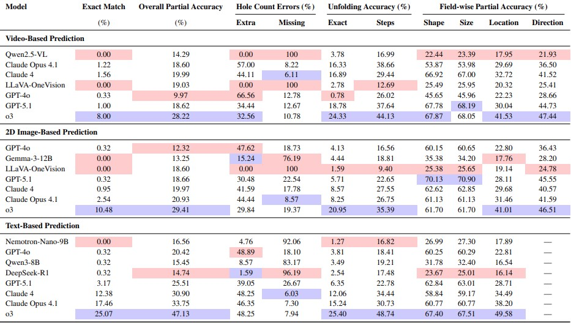

MentalBlackboard
Evaluating Spatial Visualization via Mathematical Transformations
Prediction
Predict the final hole configuration after unfolding, given the folding sequence and initial hole properties.
Backward Prediction
Predict final hole configurations when folding actions occur away from the camera, introducing limited visual information.
Planning
Infer the folding sequence and initial hole attributes from the final unfolded paper configuration.

Abstract
MentalBlackboard is a large-scale, open-ended benchmark designed to evaluate spatial visualization abilities in Vision-Language Models. The benchmark extends paper folding and hole punching tests with symmetry and rotation transformations in a physically grounded 3D environment. It introduces prediction, planning, and generalization tasks across video, image, and text modalities.
Dataset Generation

Automated VPython-based pipeline for folding, rotation, punching, and unfolding.
Tasks
-1.png)
Automated VPython-based pipeline for folding, rotation, punching, and unfolding.
Key Findings
Automated VPython-based pipeline for folding, rotation, punching, and unfolding.
- State-of-the-art VLMs struggle with multi-stage symmetry transformations.
- Best models achieve ≤ 25% accuracy on prediction tasks.
- Planning tasks reveal severe limitations in reverse spatial reasoning.